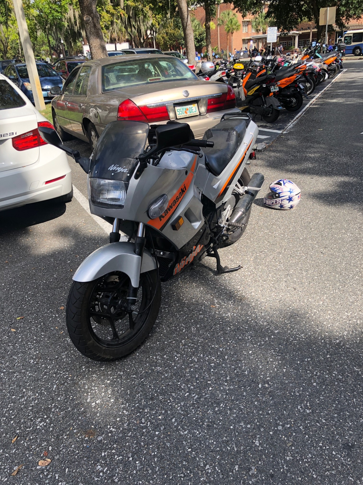

Motorcycle Rebuild
 On Feburary 27th of 2019, I purchased a 2004 Ninja 250R foir $900. I had worked for the entire semester at the Apple licensed service center at the University of Florida Bookstore. When I realized the motorcycle, It was in a much worse condition then the previous owner had described. This webpage is dedicated to the rerpair process of the Ninja 250R to near showroom state.
Profesional Shop Work
When I first got the motorcycle, I had little knowledge of real world mechanical systems and didn't know much about the repair process. In this early stage I had the some work done by a mechanic. The gas tank was leaking out of the side mounting hole (This is a commen problem on the Ninja 250 if someone tries to thread a longer bolt into the tank, it will puncture right through). I had the tank rewelded at Stuart's Cycle in Gainesville, FL. The motorcycle also needed a clutch and the carburators cleaned which I had done at Gator Scooter Repair in Gainesville, FL.
Theft
About three months had passed and I was getting used to the motorcycle. I did notice that the motorcycle was having a few issues. Water was leaking into the tank and causing the motorcycle to stall in the rain and the revolutions per minute (RPM) had a tendency to hang around 3-4k when the engine was hot. The engine also seemed to run very hot in general too. Unfortunately, on May 17th 2019, my motorcycle was stolen and recovered three days later in Waldo, Fl. When my motorcycle was returned, I found it to be absolutely destroyed. This is when I decided that I would teach myself how to work on my bike.
Carburetor Work
Once I got the motorcycle back to a decent cosmetic shape, I decided to attempt some minor carburators tuning. One of the reoccuring problems was that the engine revolutions would "hang"
(Not return to idle smoothly) after the throttle was released. After researching the issue through many various forums, I came to the conclusion that the idle mixture was recieiving too much air
and proceeded to increase the fuel mixture by turning the adjustment screws on the bottom of the carburators quarter turns at a time. This greatly reduced the hang time of the engine when returning to idle.
The second problem that I had experienced through my time with the motorcycle was that the idle rpm wasn't very steady. This was caused by an inbalance in the vacuum pressures of each of the carburators with respect to each other.
I created a homemade rig to test this vacuum pressure and used it to adjust the carburators back to manufacturer specifications. The links to the guides I used is as below:
Idle Mixture Screws
Homemade Vacuum Pressure Balance Rig
Body Work
Now that I had the motorcycle in a relatively well running condition, I decided it was time to make it look like brand new again. I carefully waited until I was able to buy all the parts off of ebay from other motorcycles that were being parted-out. I believe I got the left side and rear tail portion from a motorcycle in Vancouver, CA and the right section and front fairing stay from a seller in Alabama, US.